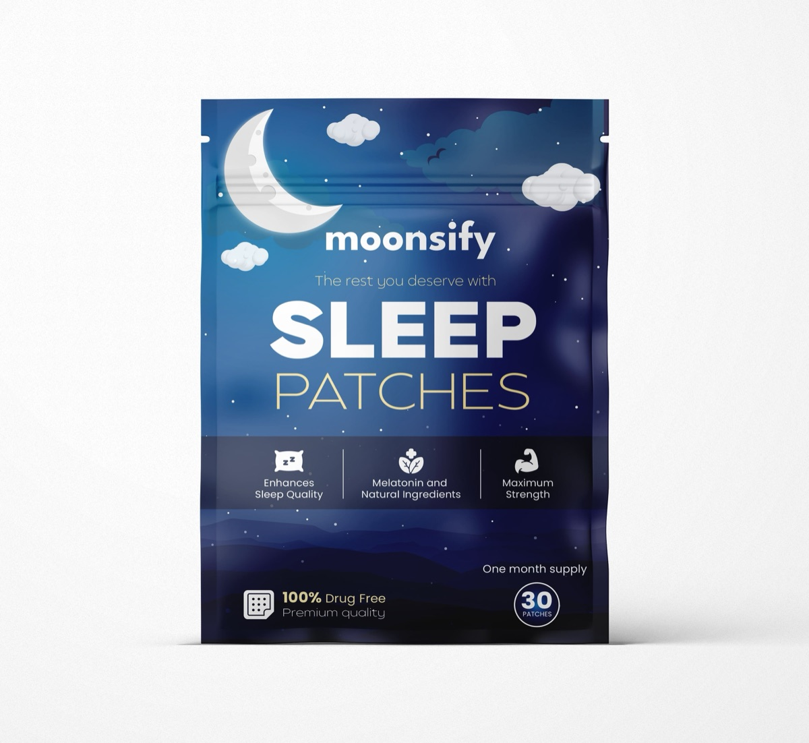

Sleep Patches for Adults, for Deep, Restorative Sleep
Moonsify sleep patches combine melatonin, magnesium and valerian root in one easy overnight patch — a natural sleep aid that helps you fall asleep faster, stay asleep longer and wake up refreshed. No pills. No grogginess.

A Natural Sleep Aid That Works While You Rest
Formulated for adults who struggle with falling asleep, staying asleep or waking up exhausted — Moonsify supports better sleep the natural way.
Powerful Sleep Support
Packed with melatonin, magnesium and valerian root, Moonsify sleep patches for adults support restorative, deep sleep and help improve sleep quality night after night.
All-Natural Relaxation
Made with hops and valerian root, these natural sleep aids for adults deliver gentle relaxation to ease you into sleep — without pills or harsh chemicals.
Simple & Convenient
Apply the sleep patch to clean, dry skin before bed and let it work overnight. A mess-free solution for better sleep with no complicated routines.
Targets Insomnia & Sleep Troubles
Formulated with melatonin and magnesium to support insomnia relief and a more consistent sleep cycle, so you enjoy deeper, more restorative rest.
Wake Up Refreshed
A steady overnight release means you wake clear-headed and energized — without the grogginess of traditional sleep aids.
Perfect for Travel & Shift Work
Jet lag, night shifts, changing schedules — discreet, easy-to-pack patches help you keep a healthy sleep rhythm wherever life takes you.
What's Inside Every Moonsify Sleep Patch
Four sleep-supportive ingredients in carefully balanced doses, released steadily through the skin while you sleep.
Melatonin
Helps regulate your natural sleep-wake cycle so you fall asleep faster and stay asleep longer.
Magnesium Malate
Promotes relaxation and supports sleep quality by easing muscle tension and stress.
Valerian Root
A traditional herbal remedy known to enhance deep, restorative sleep and ease insomnia symptoms.
Hops
Naturally calming botanical that helps the body unwind and prepare for rest.
How Moonsify Sleep Patches Work
Three simple steps to better sleep — no water, no pills, no fuss.
Apply Before Bed
Stick one patch on clean, dry skin — upper arm, shoulder or wrist — about 30 minutes before bedtime.
Sleep Deeply All Night
The patch releases melatonin, magnesium, hops and valerian root gradually through the night for steady, uninterrupted rest.
Wake Up Energized
Peel off the patch in the morning and start your day clear-headed, refreshed and ready — no sleep-aid hangover.
Why a Sleep Patch Instead of Pills?
Patches deliver active ingredients directly through the skin in a slow, controlled release — instead of one short spike from a pill or gummy.
| Moonsify Patch | Pills & Gummies | |
|---|---|---|
| All-night steady release | ✓ Yes | ✗ Single dose spike |
| Nothing to swallow or digest | ✓ Yes | ✗ Requires ingestion |
| No added sugar or fillers | ✓ Yes | ✗ Often added |
| Wake-up grogginess | ✓ Minimal | ✗ Common complaint |
| Travel-friendly & discreet | ✓ Yes | — Varies |
Made for Every Kind of Tired
Whether it's occasional sleeplessness or a schedule that fights your body clock, Moonsify helps adults get the rest they deserve.
Busy Professionals
Quiet a racing mind after long days and switch off for real, restorative rest.
Frequent Travelers
Beat jet lag and reset your sleep-wake cycle across time zones.
Shift Workers
Support consistent, quality sleep even when your schedule keeps changing.
Busy Parents
Make the sleep you do get count — fall asleep faster and rest deeper.
Better Sleep Starts Tonight
One pack. One month. A full 30 nights of deeper, more restorative sleep.
- 🌙 30 patches — full 1-month supply
- 🌿 Melatonin, magnesium, valerian root & hops
- 💊 100% drug-free, pill-free sleep support
- ✨ Premium quality, easy overnight application
Sleep Patch Questions, Answered
Everything you need to know about Moonsify sleep patches for adults.
How do Moonsify sleep patches work?
Apply one patch to clean, dry skin about 30 minutes before bed. Through the night the patch delivers a steady, controlled release of melatonin, magnesium, hops and valerian root through the skin — helping you fall asleep faster and stay asleep longer, without swallowing pills.
What ingredients are in Moonsify sleep patches?
Each patch contains Melatonin 7 mg, Magnesium Malate 41.32 mg, Valerian Root 27 mg and Hops 16.53 mg — natural ingredients known for their sleep-supportive and relaxing properties. The patches are 100% drug-free.
Will sleep patches make me groggy in the morning?
Unlike many traditional sleep aids, Moonsify patches release their ingredients gradually overnight, so most users wake up feeling clear-headed, refreshed and energized rather than groggy.
Are sleep patches better than melatonin pills?
Patches deliver active ingredients steadily through the skin over the whole night instead of one spike from a pill. They're mess-free, require no water or swallowing, and avoid the digestive system entirely — a convenient option for anyone who dislikes pills.
When should I apply a sleep patch?
Apply one patch to a clean, dry, relatively hair-free area of skin (upper arm, shoulder or wrist work well) roughly 30 minutes before bedtime. Remove it in the morning and discard.
How many patches are in one pack?
Each pack contains 30 sleep patches — a full one-month supply for consistent, better sleep.
Who are Moonsify sleep patches for?
Moonsify patches are formulated for adults dealing with occasional sleeplessness, insomnia troubles, stress, jet lag or irregular schedules — including shift workers, frequent travelers and busy parents. Not intended for children. If you are pregnant, nursing or taking medication, consult your doctor before use.
The Rest You Deserve Is One Patch Away
Say goodbye to sleepless nights. Stick on a Moonsify patch tonight and wake up to a better morning.